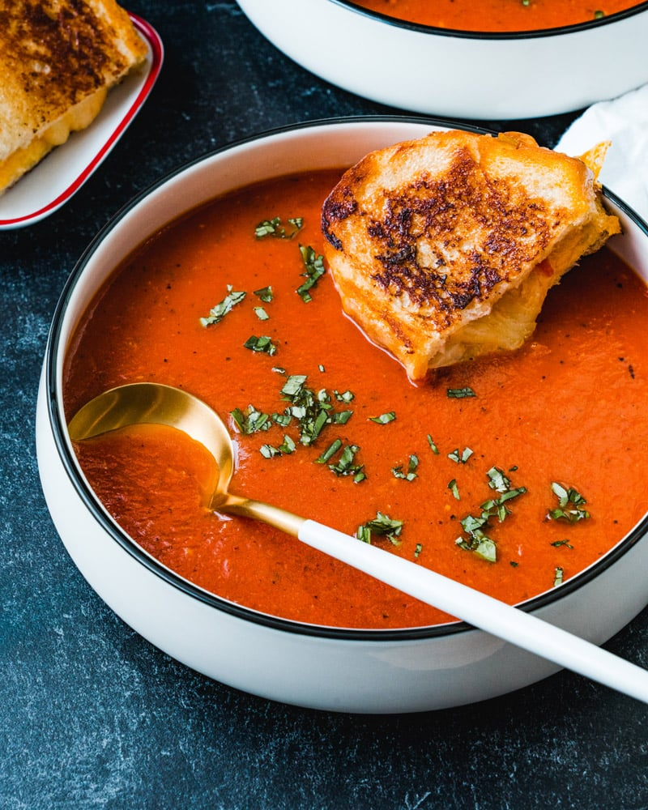

Classic Creamy Tomato Soup Recipe
Masters Of Kitchen
This Classic Creamy Tomato Soup recipe is the ultimate comfort food, perfect for any season. Rich in flavor with a velvety texture, it's an easy-to-make dish that pairs wonderfully with a variety of sides.
Price: ₹60
Recipe Info
Prep Time: 10 minutes
Cook Time: 30 minutes
Total Time: 40 minutes
Course: Appetizer, Main Course
Cuisine: American, European
Servings: 4
Calories: 250 kcal (approx.)
Equipment
- Large pot
- Immersion blender or regular blender
- Measuring cups and spoons
Ingredients
- 2 tablespoons olive oil
- 1 medium onion, diced
- 2 cloves garlic, minced
- 2 pounds fresh tomatoes, peeled and chopped (or 1 large can (28 ounces) of whole tomatoes with juice)
- 4 cups vegetable or chicken broth
- ½ cup heavy cream
- Salt and pepper to taste
- 1 teaspoon sugar (optional)
- Fresh basil leaves for garnish